Bernting · Renoveringsdossier
Badrum – nedervåning
Materialöversikt för Studio Strecks design — alla produkter som Ruiying valt, kontrollerade mot ritningen, med budget och öppna beslut samlat på ett ställe.

Valda artiklar 7 artiklar · 30 894 kr
Rummet i 3D kulörer · ljus · VR
Studio Strecks IFC-modell med riktiga material — ek, mikrocement, matt svart armatur och glas. Byt mikrocementkulör och växla mellan dags- och kvällsljus direkt i vyn. Snurra med musen, eller gå in i rummet. Har du ett VR-headset öppnar du sidan i headsetets webbläsare och trycker på VR.
Geometrin kommer från arkitektens IFC. Materialen är våra — bra för känsla och proportion, inte för exakta mått.
Visualiseringar — valda produkter 5 vyer · Macchiato
AI-genererade bedömningsbilder utifrån Studio Strecks 3D-modell, de valda produkterna och Konkral Smooth bruten i Jotun LADY 1359 Macchiato. Klicka på en bild för full storlek.
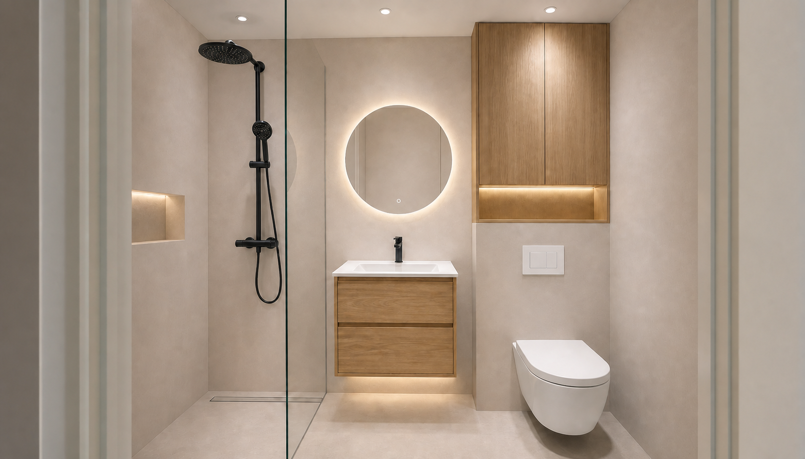
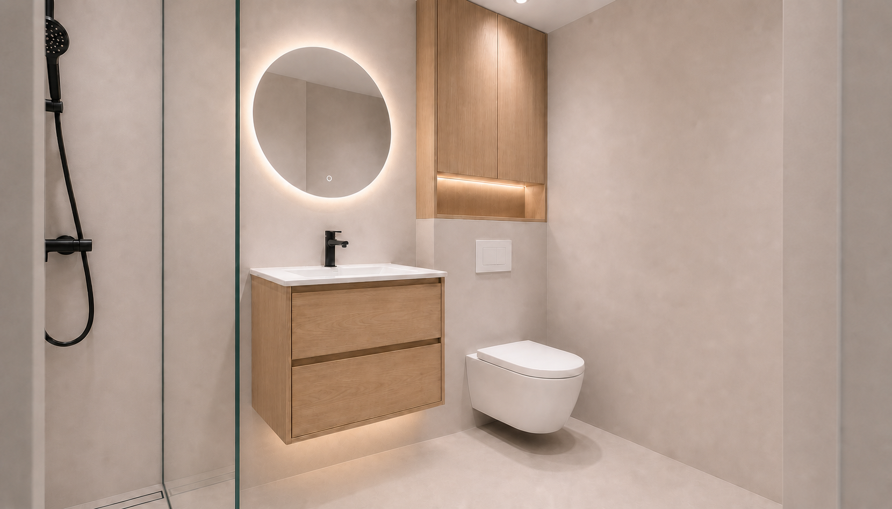
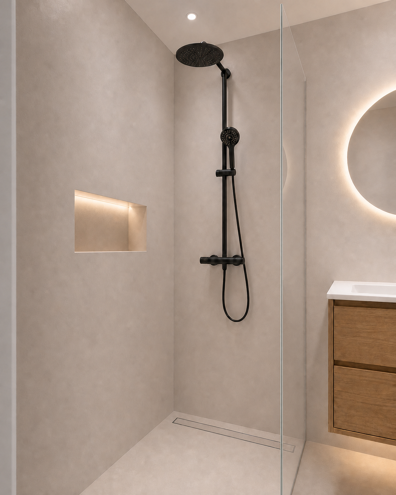
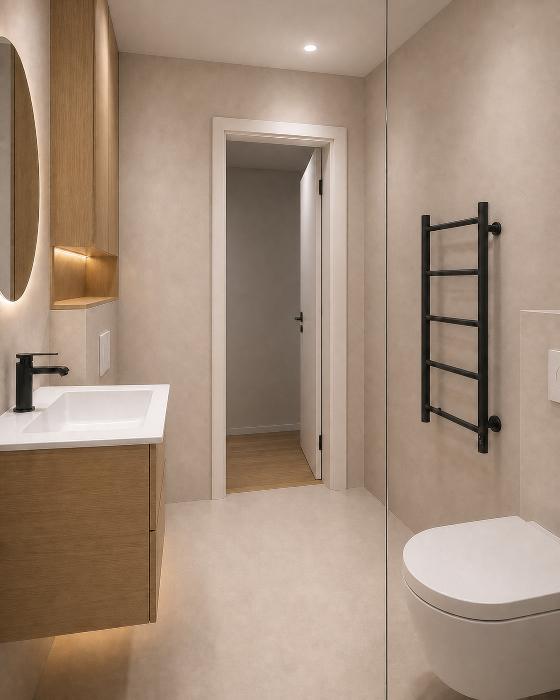
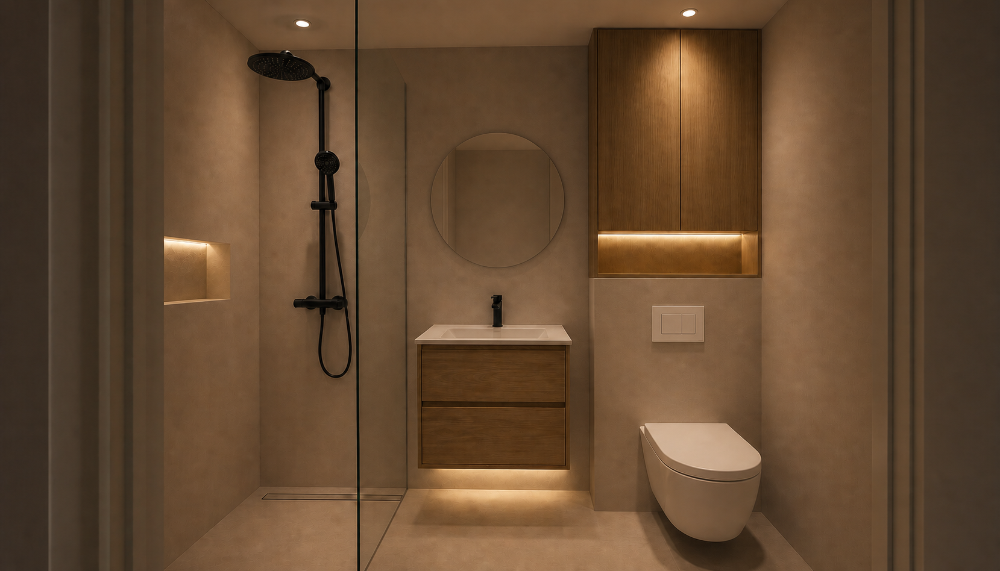
För bedömning av känsla, färg och proportioner — inte för exakta mått eller installation. Ett fysiskt, slutlackat Macchiato-prov i rummets riktiga ljus gäller före bilden.
Att göra innan beställning 1 kvar
Kvar att göra
Klart
I designen, ännu ej valt 7 delar
| Del | Status | Ungefär | Ansvar |
|---|
Ungefärliga belopp är platshållare för att storleksuppskatta budgeten — inte offerter. Bekräfta med Studio Streck / Z Bygg vem som köper vad.
Kulörjämförelse — mikrocement 3 kandidater + 3 kontraster
Tre AI-tolkningar från samma dörrvy, med valda produkter och cirka 3000 K-belysning. Mikrocementens kulörriktning är den avsedda skillnaden; mindre variationer i geometri och ljus kan förekomma. Klicka på en bild för full storlek.
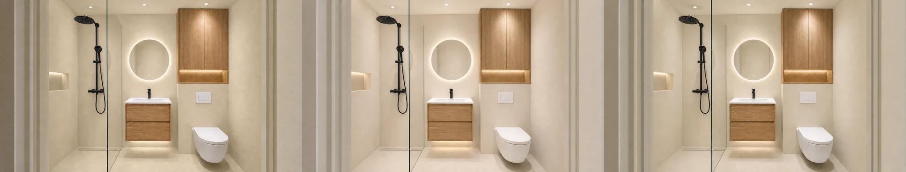
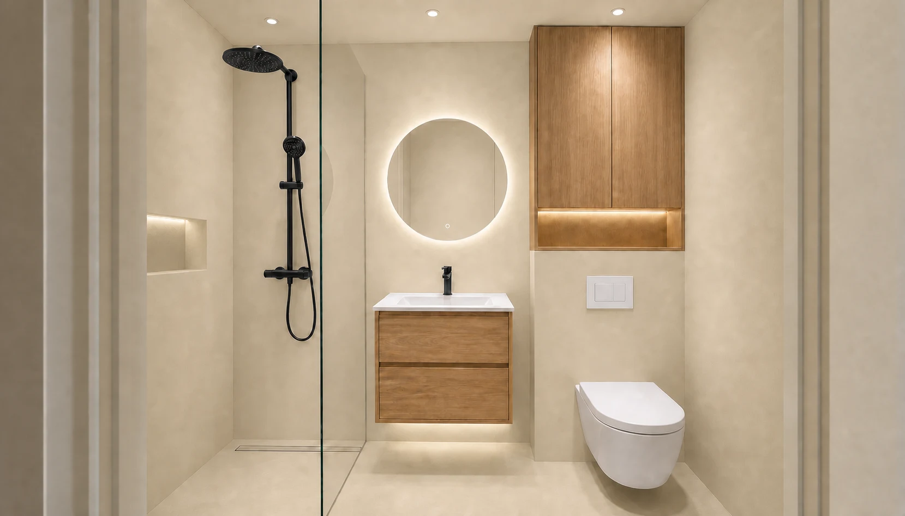
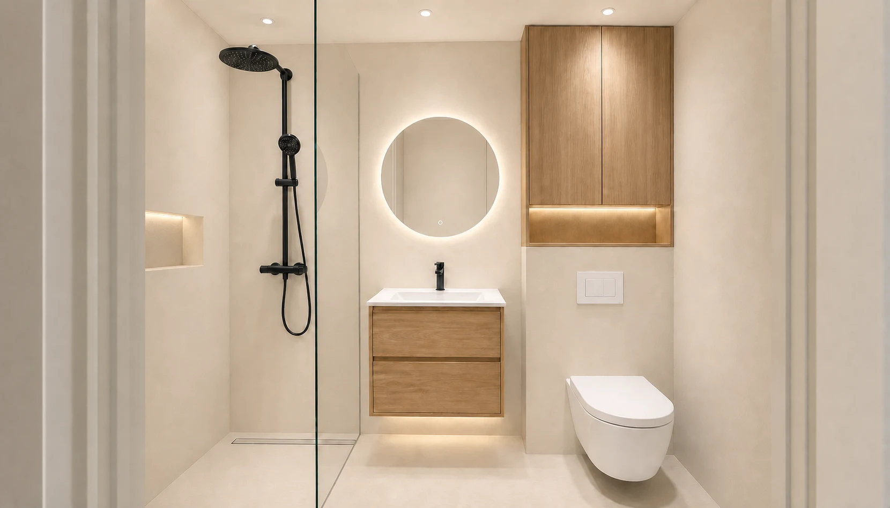
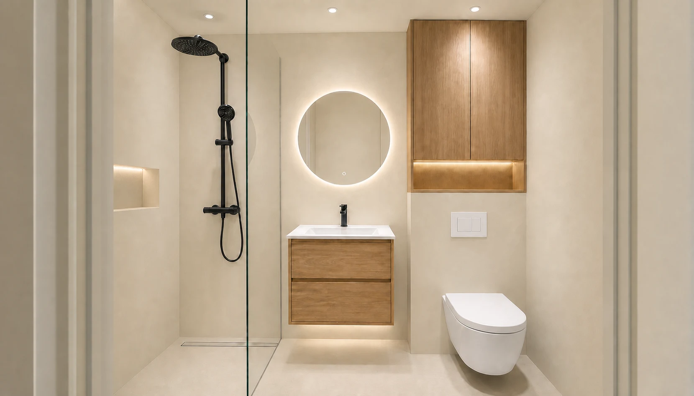
Kulörnumren är Jotuns, inte Konkrals
Konkral Smooth levereras ofärgad och bryts till valfri NCS- eller Jotun-kulör. Macchiato är alltså Jotun LADY 1359 (närmaste NCS ca S 2005-Y40R), inte ett namn i Konkrals egen karta — beställningen måste ange kulörkoden. Konkrals egna provpaket heter Mineral, Sand, Dream, Balance, Night och Sense.
Prova kulörerna live i 3D-modellen →
Bilderna hjälper till att jämföra riktning, men är inte färgprov. Det slutlackade fysiska mikrocementprovet i badrummets riktiga ljus gäller före skärmen.
Visuell kalibrering — medvetna kontraster
Tre avsiktligt färgstarka ytterlägen i samma rum. De är inte kortlistade kulörer; de visar hur mycket större ett verkligt kulörskifte är än skillnaden mellan de tre beige kandidaterna.
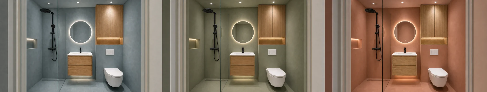
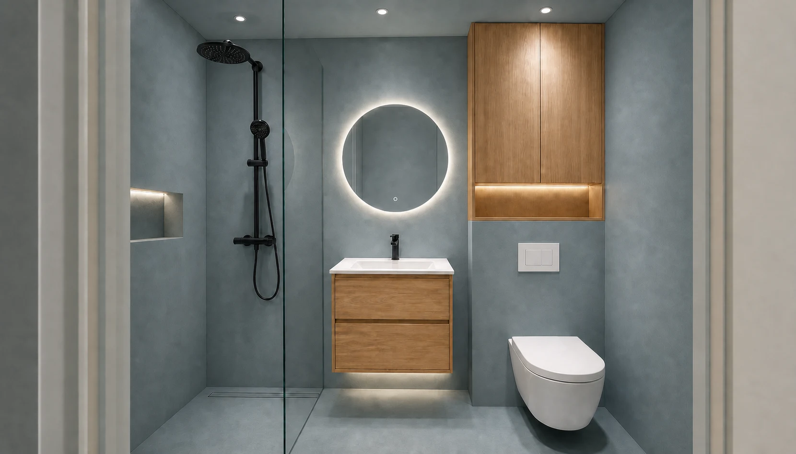
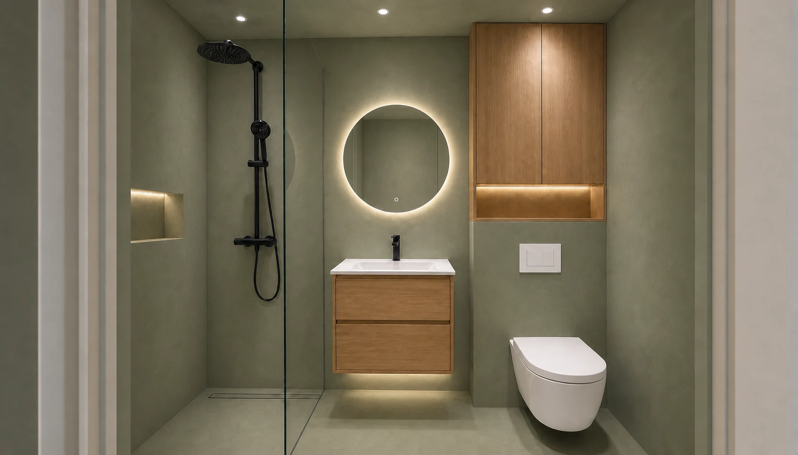
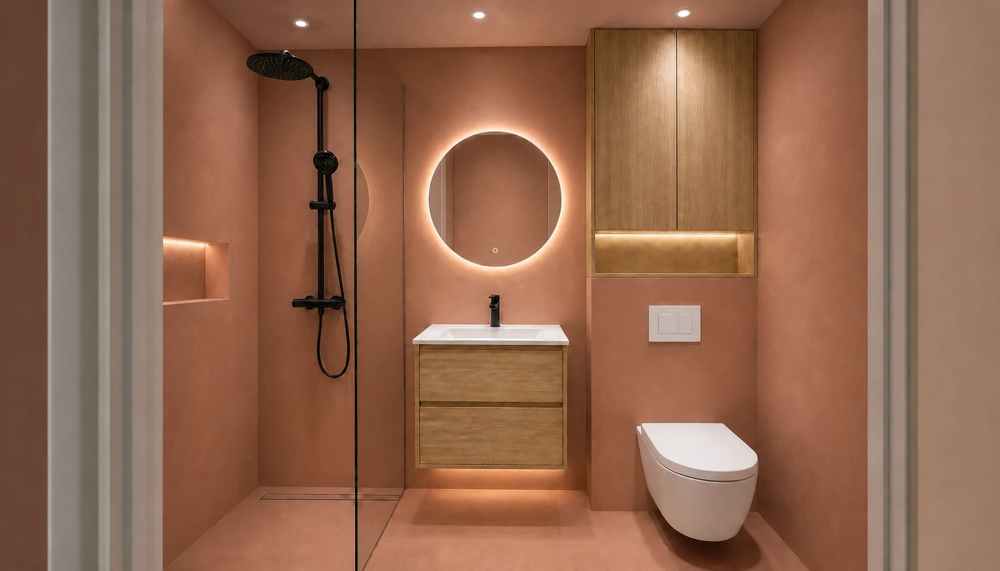
Jotun/NCS-riktningar för visuell jämförelse — inte bekräftade beställningskulörer hos Konkral. Kontrollera infärgning och beställ ett slutlackat fysiskt prov.
Mikrocement — vägg & golv beige · att beställa
Designen anger mikrocement på vägg och golv i en varm beige/greige ton. Viktigt att veta innan vi väljer leverantör:
Mikrocement är ett ytskikt — inte tätskikt
Enligt GVK ska mikrocement betraktas som ytskikt och läggas ovanpå ett godkänt tätskikt — aldrig som ersättning. Tätskiktet måste utföras av en BBV-behörig eller GVK-auktoriserad hantverkare; det är det som ger våtrumsintyget. Detta är kompetensen snickaren syftar på.
Samma system hela vägen
Läggs mikrocementen direkt på tätskiktet måste tätskiktsleverantören godkänna det, och primer/fästmassa ska vara från samma tillverkare — annars kan garantin påverkas.
Pris (grov indikation)
Ca 1 600–2 500 kr/m² inkl. moms efter ROT (arbete + material). Både golv och väggar räknas, så ett litet badrum landar ofta från ~30 000 kr.
Bedöm prover i rummets ljus
En provbit utan slutlack ser ljusare ut — efter matt lack blir tonen ofta något mörkare. Beställ fysiska prover och titta i badrummets eget ljus.
Leverantörer att kontakta (Göteborg + beige)
| Leverantör | Not | Länk |
|---|
Beige kandidater
Nästa steg: beställ gratis provbitar från 2–3 leverantörer och bedöm i rummets ljus, och bekräfta med Z Bygg vem som gör tätskiktet.
Kontakta idag — mikrocement Göteborg 19 företag
Alla mikrocementföretag i och runt Göteborg som går att ringa om kulörval, prover och materialbokning. Klicka på ett namn för telefonnummer, adress, öppettider och ett tips om vad du ska fråga.
Semestervarning
Sammanställt i vecka 31 (industrisemester). De flesta av dessa är 1–5-mansföretag och kan vara stängda även om öppettiderna säger annat — webbutikerna längst ner är säkrast för att beställa kulörprover direkt.
Utförare — Göteborg med omnejd
Showroom — se kulörer på plats
Webbutiker — beställ kulörprover direkt
Ordningen är vår prioritering. Ring GBG Designcement först (längst öppettider, bäst omdömen) och beställ kulörprover från Konkral före kl. 12 — då är kulören låst oavsett vem som lägger.
Budgetdetaljer rad för rad
| Rad | Inköpsställe | Listpris | Med erbjudande |
|---|
Exkluderar ännu ej valda designdelar (ca 15k av Vi-posterna) och all entreprenad (mikrocement, nisch, golvbrunn, spots).